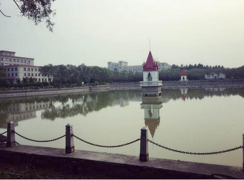

崇师楼
崇师楼（环里面）后面是一个十分漂亮的小花园，晨读以及情侣们劈情操的圣地
马克思主义学院
四楼，于是就意外的发现了哈师大最神秘的学院—马克思主义学院
一食堂一楼内
一食堂，位于三公寓旁边，人文楼后身，在师大较为里边的位置，这是一食堂内景
一食堂电梯处
二楼也是餐厅，2，3楼可以找到清真的地方。
一食堂一楼
酱香饼也是特色，午餐好吃一点的就是这张图片—郑记卤肉饭，我吃了有半学期一下子吃腻味了，但真的很好吃，盖浇饭10元一份，选一个肉菜，三个素菜。还有就是图里的鸡柳卷饼还行
二食堂
师大食堂真心不错，能感觉到做饭人的那份用心，以及你去刷卡打饭的时候服务人员对学生的热情，让你感觉你不买他家的饭都是一种罪过
二食堂
二食堂，好吃的感觉是二楼的通鸡饭🐔还有木桶饭，别的都一般般，三楼是清真食堂，做的菜很朴实，有一种家里的味道
浴池
师大浴池只有一个，环境一般，据说人多的时候没办法两个人挤一个用都有可能（这个也是听别人传的，感觉有点扯淡了)毕竟男生稀少。233..

梦溪湖1
梦溪湖一共有三个，一个在梦溪宾馆门前，是弯月形的，一个在行知楼和图书馆之间，还有一个在二食堂门前，那块有个桥，有很多晨读社团都在那晨读，感觉应该不错，清晨神清气爽的站在桥上读英语，感觉应该棒棒哒
梦溪湖2
梦溪湖一共有三个，一个在梦溪宾馆门前，是弯月形的，一个在行知楼和图书馆之间，还有一个在二食堂门前，那块有个桥，有很多晨读社团都在那晨读，感觉应该不错，清晨神清气爽的站在桥上读英语，感觉应该棒棒哒
图书馆正面
图书馆是一个体现高校文化内涵和学生学习风气的地方，师大图书馆是黑龙江省文学古籍藏书量最大的，图书种类也仅次于哈工大和东北农大，是学生们学习的好去处
图书馆侧面
图书馆侧面，从理工二和理工一中间过来的角度。
图书馆刷卡口
带上你的一卡通，在贴卡处贴，不过有时候不好用，可以换一个刷。一卡通是图书馆进去，和借书，还书必备的东西。
图书馆三楼
图书馆算上负一层一共六层，进去是用饭卡刷卡才能进，地下一层是自习室，一般考研的学姐学长在地下一层长期安营扎寨，二楼也有自习室，还有电子阅览室
图书馆三楼自习室
感觉三楼的大厅真是高端大气上档次，再看看自习室的内景，全是低头学习的同学们，随便一看学什么的都有，但是感觉看得最多的还是英语、汉语、数学的人
图书馆三楼
图书馆人多，三楼以上采光也好，所以一直都很温暖，一楼两侧比较凉快，适合背东西
社科楼
师大规模比较大的楼除了主楼行知楼、崇师楼以外就是社科楼了，据说以前是师大呼兰校区的主楼。社科就是社会科学，正门是斯拉夫语学院、东语学院，西侧门是教育科学学院
社科楼斯拉夫语
发现了哈师大另一个神秘的学院—斯拉夫语学院
从社科楼眺望
感觉从社科楼高层上俯瞰下面应该会很壮观，所以就在社科楼坐电梯到八楼拍了张照片--引自师大贴吧hdjdbr双鱼
人文楼
社科楼的旁边就是人文楼，人文楼里有两个学院，一个是历史文化学院，一个是哈师大的金字招牌——文学院。先说文学院，哈师大建立最早的院系，拥有三个博士点，一个博士后流动站（师大仅有两个博士后流动站，另一个是马克思主义），三个本科专业，基本上都是一表招生，是哈师大最有特色和历史的学院。
理工楼
理工楼一共有三个楼：理工一（站主学院啦(^.^)）、理工二、理工三。由于这三个楼除了名不一样意外长得简直一模一样，在加上楼主比较懒，所以就照了一张
体育场
运动使人快乐和有活力，接下来是体育场，各种阅兵仪式、运动会都会在体育场举行，规模不小，是塑胶跑道，晨跑的时候可以选择来这进行晨跑
体育馆
体育馆里有健身房，办个卡大概存一百，器械还算全面；还有游泳馆，是最近刚开的；室内篮球场和网球场非常豪华，体育生上课应该在这。还有就是体育生的教学楼—体育楼，在社科楼的右侧
大篮排网球场
大球场里边有篮球场和网球场，在陶行知雕像的右面，大一和大二上公共选修体育课都应该在这里上，说到体育选修，请大家选的时候一定要慎重，有些老师认真负责并且考试给的成绩很高，想过也很容易；但是有的老师平时把学生甩一边今天不上明天不上的到最后考试很严
小篮球场
在二食堂、五公寓那边，经常取快递也是在这里了
春秋西路
师大军训时间上届我记着是19天，不算太累，但是如果太阳大的话就会很晒🌞，军训的地点在理工一二三号楼的后面那条路上，叫春秋西路，这条路也是大家夜跑的绝佳地点
雕像
社科楼门前有一个人物雕像，是教育家陶行知，行知楼也是用他命名的，学校的宗旨也是知行合一
正门
雕像往前走就到了师大的另一个门—前门，要想回公寓的话一般都走前门，前门前面的路叫师大路，旁边有一个黑龙江外国语学院


.png)
.png)